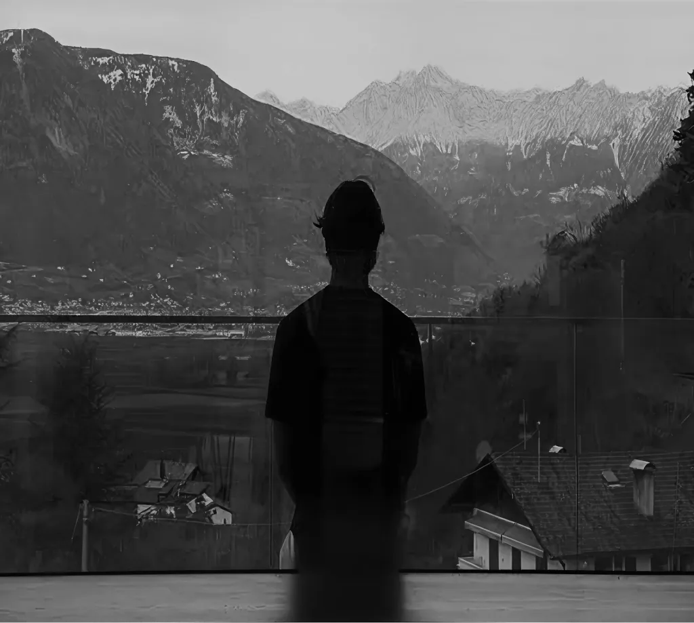
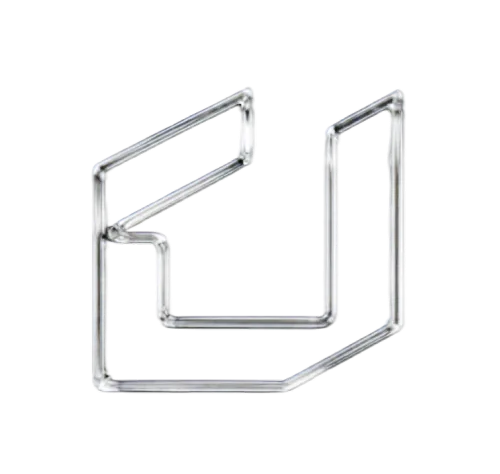
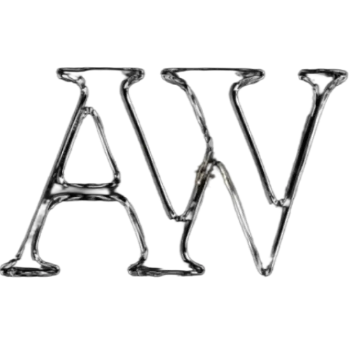
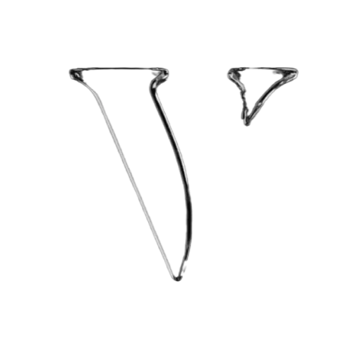
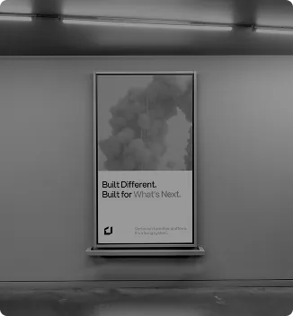
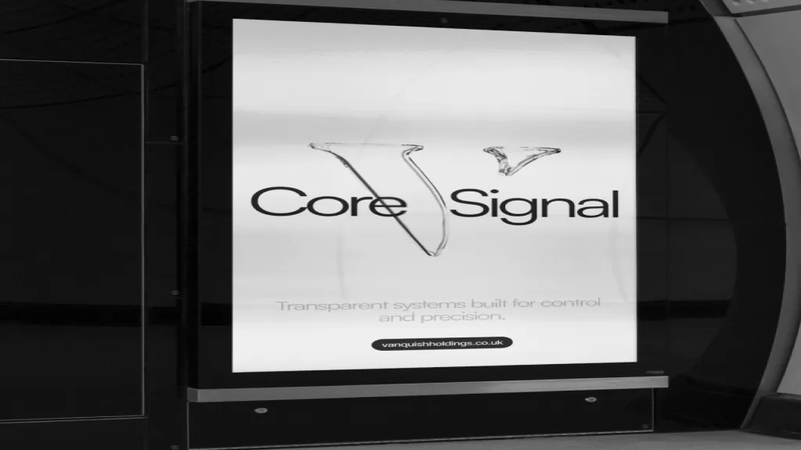

Built with intention. Designed to create lasting impact.
Explore ventures
Ventures Overview
Beyond individual projects

scroll to explore
Vertus
Designed to create meaningful solutions through thoughtful execution and distinctive design. Every detail reflects a commitment to quality.

Alpha Ledger
A venture shaped by innovation and precision, bringing together technology and strategy to build for the future.

Vanquish
A modern platform focused on delivering seamless digital experiences. Built with clarity, performance and a long-term vision.
CREATE IMPACT

SHARED VISION
Whether you’re launching a company, exploring a new direction, or seeking strategic collaboration, let’s start the conversation.
